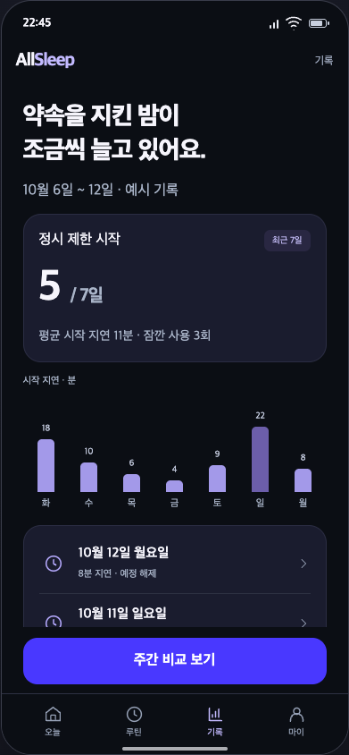
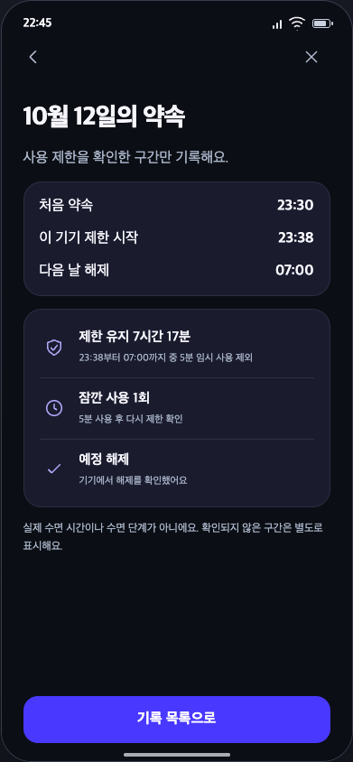
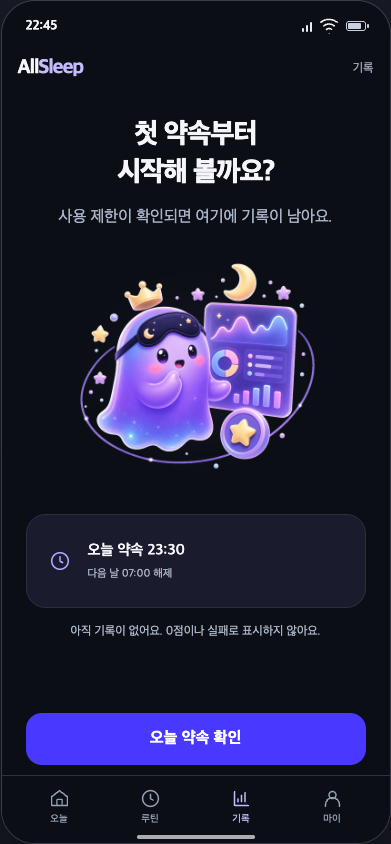
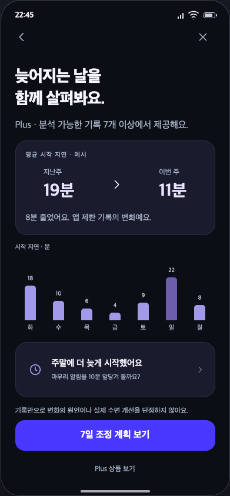
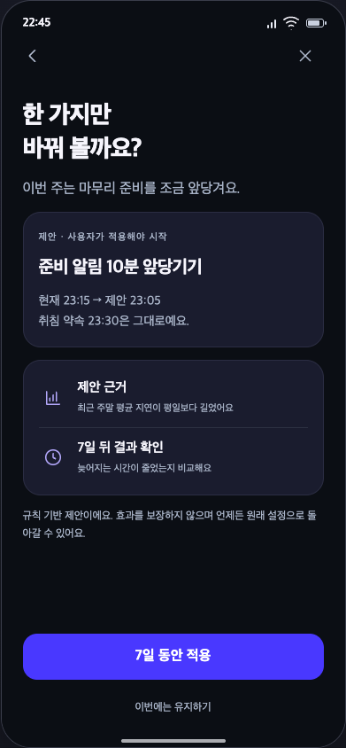
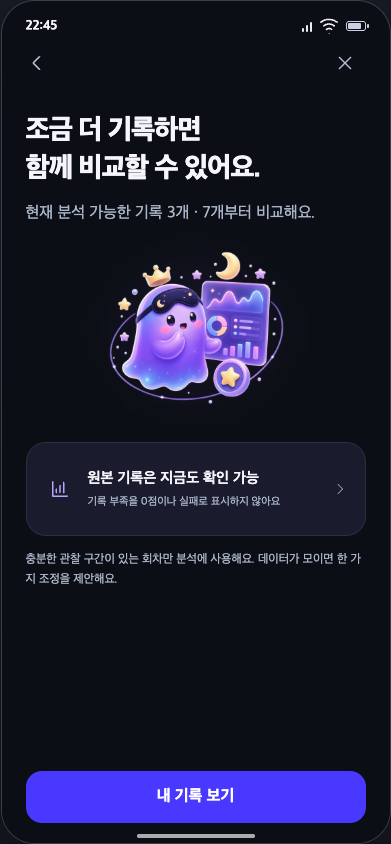
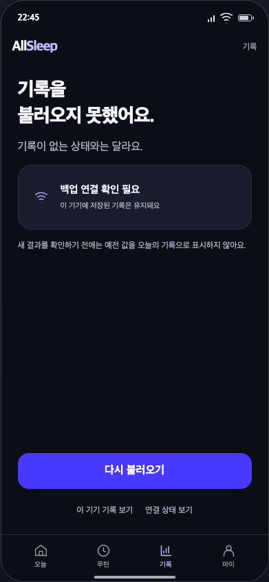
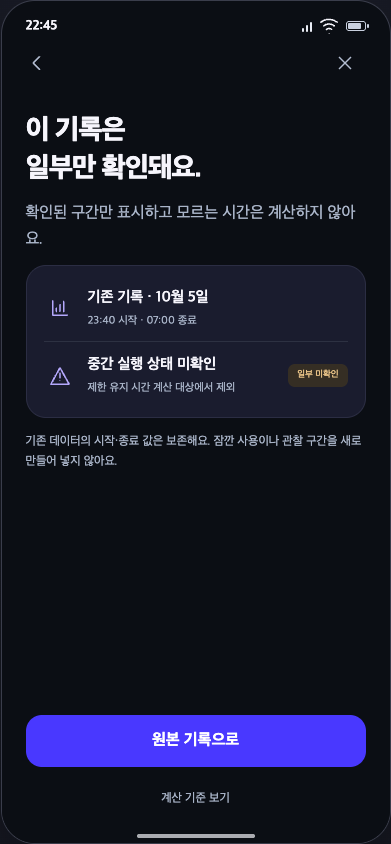

ALLSLEEP / FINAL SCREEN DESIGNS / 07기록 · 8개 화면
원본 기록, 비교·조정, 빈 결과·부족·실패·관찰 공백. 실제 수면 시간과 구분합니다.

기록 요약
S01 · 주간 비교 보기
하루 기록 상세
S02 · 기록 목록으로
기록 없음
S03 · 오늘 약속 확인
주간 비교
S04 · 7일 조정 계획 보기
7일 조정 계획
S05 · 7일 동안 적용
분석 기록 부족
S06 · 내 기록 보기
기록 조회 실패
S07 · 다시 불러오기
관찰 공백과 기존 기록
S08 · 원본 기록으로